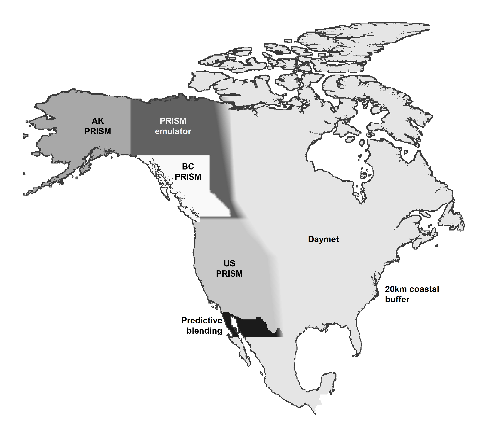
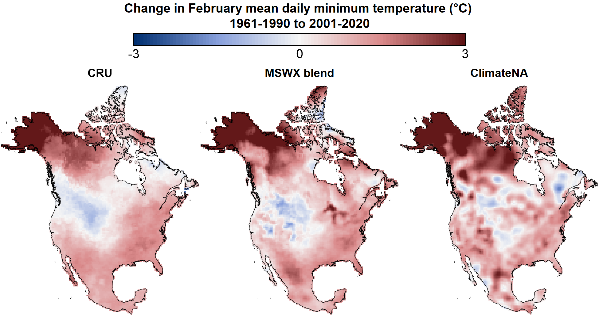
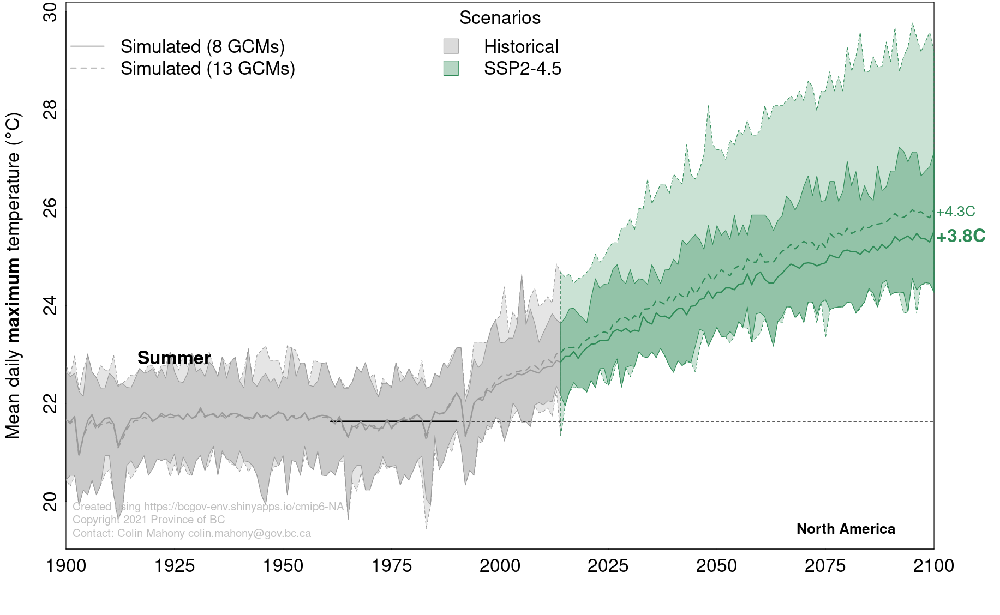

4 Methods
4.1 climr downscaling methods
Downscaling is the process of converting low-spatial-resolution climate data to high resolution. climr adapts a downscaling approach originally implemented in ClimateNA (Wang et al. (2016)) by Dr. Tongli Wang (University of British Columbia), Dr. Andreas Hamann (University of Alberta), and Dave Spittlehouse (BC Ministry of Forests). This approach downscales climate data in three stages:
- Change-factor downscaling of coarse-resolution (50-200km grid) monthly temperature and precipitation data from climate models or observational sources to high-resolution (1-4km grid);
- Elevation adjustment of temperature variables to provide scales finer than the high-resolution reference grid; and
- Calculating derived variables (e.g. degree-days and precipitation as snow) from the downscaled monthly temperature and precipitation variables.
4.1.1 Stage 1: change-factor (aka “delta”) downscaling
climr uses a simple method called change-factor downscaling. This method adds low-spatial-resolution anomalies (e.g., from a climate model) to a high-resolution gridded climate map (Tabor and Williams 2010). While change-factor downscaling is too simplistic for downscaling of daily time series or extremes indices, it is sufficient for downscaling temperature and precipitation data at low temporal resolution (e.g., 20-year climate averages).
The default high-resolution climate maps used by climr are 800m gridded maps of mean daily maximum temperature (Tmax), mean daily minimum temperature (Tmin), and precipitation (PPT) for the 1961-1990 period. Global climate model data are at much lower resolution (60-200km grid scale). To downscale the GCM projection, we first interpolate the low-resolution GCM anomaly (e.g., the temperature change from 1961-1990 to 2041-2060) to the resolution of the detailed reference climate map. Then we add these smoothed anomalies to the high-resolution 1961-1990 climate map, resulting in a high-resolution map of the simulated climate in the future period (e.g., 2041-2060). In the case of precipitation, we multiply the reference climate by the relative anomaly (e.g., multiply by 1.07 for a 7% increase in precipitation), rather than adding the absolute anomaly.
4.1.2 Stage 2: Elevation adjustment
climr uses elevation adjustment to downscale temperature variables to scales finer than the resolution of the reference climate map. It does this by inferring a relationship between temperature and elevation, known as a lapse rate, from the reference climate maps. The local lapse rate is calculated for each grid cell of the reference climate map using a linear regression of temperature to elevation among the focal cell and its 8 neighbours. This lapse rate is then added to the difference between the user-supplied elevation and the elevation of the climr reference map.
Elevation adjustment provides a visually appealing map and can be useful in improving precision in climate values for points of interest in areas of steep topography. However, it is important to remember that the climr output only represents the effects of regional climate and elevation. Microclimatic factors such as aspect, vegetation, water bodies, frost pooling, and soil moisture are not represented in these maps.
By default, climr doesn’t apply elevation adjustment to precipitation, because in most cases elevation does not influence precipitation at scales less than 2km. Instead, precipitation at scales finer than 2.5m is simply interpolated from the nearest four grid points in the reference map. Users can choose to apply elevation-adjustment to precipitation in the Downscale Parameters dialogue box.
4.1.3 Stage 3: Derived variables
The value of delta downscaling isn’t just in obtaining the new absolute values of temperature and precipitation. It allows us to calculate anomalies in other indices that don’t scale linearly with temperature or precipitation, such as degree-days or precipitation as snow. climr currently uses the ClimateNA derived variable equations (Wang et al. (2016)). These equations are developed by fitting non-linear models of the relationship between the variable of interest calculated from daily weather station data and monthly temperature and/or precipitation at these weather stations.
4.1.4 Full article
For more details and illustrations of the climr downscaling method, see the full article.
4.2 The climr baseline climatologies
High-quality gridded climatologies (climate maps) of North America are not currently available, despite the availability of high-quality climate maps for BC and the continental US (the PRISM maps; Daly et al. (2008)). Existing seamless maps made with a consistent methodology across North America (WorldClim, Daymet, and CHELSA) exhibit unacceptable artefacts, which are unrealistic patterns in the data, in the complex topography of the western Cordillera. For this reason, we developed a mosaic of climatologies for use as climr’s baseline (reference) maps of temperature and precipitation.
The climr mosaic is a composite of the 1981-2010 gridded climate maps from the following sources (Figure 4.1):
PRISM for Western US—The Parameter-elevation Regressions on Independent Slopes Model (PRISM; Daly et al. (2008)) maps are recognized as the highest-quality gridded climatological normals for the contiguous United States. We blended the US PRISM with BC PRISM emulator (explained below) between latitudes 48oN and 49oN.
British Columbia PRISM—The BC PRISM (Pacific Climate Impacts Consortium (2014)) is developed by the Pacific Climate Impacts Consortium in collaboration with the PRISM Climate Group (Oregon State University). It generally is highly compatible with the US and Alaska PRISM products, with exceptions noted in the Discussion section. The blending with the PRISM emulator along the northern, eastern, and southern BC boundary does not compromise the integrity of the BC PRISM since the emulator replicates the PRISM map in the blending region.
EDIT FOR LINKS: - British Columbia PRISM—The BC PRISM (Pacific Climate Impacts Consortium (2014)) is developed by the Pacific Climate Impacts Consortium in collaboration with the PRISM Climate Group (Oregon State University). It generally is highly compatible with the US and Alaska PRISM products, with exceptions noted in the Discussion section of the full article. The blending with the PRISM emulator along the northern, eastern, and southern BC boundary does not compromise the integrity of the BC PRISM since the emulator replicates the PRISM map in the blending region.
Alaska PRISM—The PRISM 1981-2010 climatological maps for Alaska (Daly et al. 2018) are the best available product, as a result of exhaustive station data compilation and local expert review, and are compatible with the BC PRISM.
Daymet for eastern North America and Mexico—While the US PRISM is likely preferable to Daymet over the continental US, Daymet (Thornton et al. (2021)) provides north-south continuity across Canada, USA, and Mexico. Daymet was chosen over other North American gridded climatologies (WorldClim and CHELSA) due to its relative quality and the availability of a 1981-2010 normal period.
PRISM Emulator in Yukon and Northwest Territories—We evaluated all available climatological maps for the Yukon and Northwest Territories (WorldClim, CHELSA, Daymet, NRCAN ANUSPLIN, and Western Canadian 4km 1961-1990 PRISM). None of these products were of acceptable quality due to very low weather station density. To provide a PRISM-compatible estimation of climate in this region, we trained deep learning models on the BC and Alaska PRISM maps and predicted them into the Yukon and NWT.
Predictive blending in Northern Mexico—The US PRISM and Daymet maps require blending at the US-Mexico border to avoid boundary artefacts. Rather than blending Daymet into the US PRISM, which would degrade the PRISM map, we used machine learning (Random Forest regression) to interpolate between PRISM and Daymet in a broad swath of Northern Mexico. This is a less sophisticated approach to PRISM emulation than used in the Yukon and NWT, but it is much more computationally efficient and produced acceptable results.
20km Coastal buffer—We extended the coastal climate values outwards into the ocean to a distance of 20km from shore. We retained existing coastal buffers present in the PRISM products and extended their outer limit where necessary. This buffer ensures climate values are available in outer coastal land areas, but is not intended to estimate temperature and precipitation over the ocean.
4.2.1 Full article
For more details and illustrations of the climr baseline climatologies, see the full article.
4.3 Historical time series
The climr App provides access to three observational time series datasets of historical temperature and precipitation:
- CRU/GPCC: The 1901-2023 combined Climatic Research Unit TS dataset (CRU; Harris et al. (2020)) for temperature and Global Precipitation Climatology Centre dataset (GPCC; Becker et al. (2013)) for precipitation;
- MSWX blend: The 1981-2024 Multi-Source Weather (MSWX; Beck et al. (2022)) for temperature and Multi-Source Weighted-Ensemble Precipitation (MSWEP; Beck et al. (2019)) for precipitation, which we have extended back to 1901 using the CRU/GPCC dataset; and
- ClimateNA: The 1901-2023 ClimateNA time series (Wang, Hamann, and Sang (2024)).
Our analysis to date indicates substantial differences between these datasets (Figure 4.2), and that each has weaknesses. CRU/GPCC are compromised by the post-1990s decline in station density, while ClimateNA exhibits apparent interpolation artefacts , artificial patterns that don’t exist in the real climate, with large impacts on the detected climate change trend. The MSWX blend produces credible trends for temperature and precipitation, but has likely artefacts in precipitation trends in the arctic. The MSWX blend is the most conceptually appealing approach to gridded time series because the gridpoints without station observations are informed by physical weather modeling. However, a more detailed validation would be required to establish MSWX as a preferred product. In the meantime, we are using the MSWX-blend for the 2001-2020 observed normals as well as for transferring the 1981-2010 climr climatological mosaic to the 1961-1990 baseline period. We recommend using the MSWX-blend as the primary.

4.3.1 Full article
For more details on the gridded observational time series datasets, see the full article.
4.4 Global climate model ensemble selection
Wherever possible, climate change studies will benefit from the use of projections from multiple models to assess modeling uncertainties. There is broad scientific agreement that an ensemble of at least eight independent climate models are required to represent modeling uncertainties about climate change outcomes over large regions.
Mahony et al. (2022) recommend an ensemble of 8 models for ensemble analysis. This 8-model ensemble is more consistent with the IPCC’s assessment of climate sensitivity than the full 13-model climr ensemble (Figure 4.3), and excludes a model with problematic spatial artefacts in BC Coast Mountains. The recommended 8-model ensemble is: ACCESS-ESM1.5, CNRM-ESM2-1, EC-Earth3, GFDL-ESM4, GISS-E2-1-G, MIROC6, MPI-ESM1.2-HR, and MRI-ESM2.0.

For more details on the climr global climate model ensemble selection, see the full article.
4.5 References
Beck, Hylke E., Albert I. J. M. van Dijk, Pablo R. Larraondo, Tim R. McVicar, Ming Pan, Emanuel Dutra, and Diego G. Miralles. 2022. “MSWX: Global 3-Hourly 0.1° Bias-Corrected Meteorological Data Including Near-Real-Time Updates and Forecast Ensembles.” Bulletin of the American Meteorological Society 103 (3): E710–32. https://doi.org/10.1175/BAMS-D-21-0145.1.
Beck, Hylke E., Eric F. Wood, Ming Pan, Colby K. Fisher, Diego G. Miralles, Albert I. J. M. van Dijk, Tim R. McVicar, and Robert F. Adler. 2019. “MSWEP V2 Global 3-Hourly 0.1° Precipitation: Methodology and Quantitative Assessment.” Bulletin of the American Meteorological Society 100 (3): 473–500. https://doi.org/10.1175/BAMS-D-17-0138.1.
Becker, Andreas, Peter Finger, Anja Meyer-Christoffer, Bruno Rudolf, Kathrin Schamm, Udo Schneider, and Markus Ziese. 2013. “A Description of the Global Land-Surface Precipitation Data Products of the Global Precipitation Climatology Centre with Sample Applications Including Centennial (Trend) Analysis from 1901–Present.” Earth System Science Data 5 (1): 71–99. https://doi.org/10.5194/essd-5-71-2013.
Daly, C., M. Halbleib, J. I. Smith, W. P. Gibson, M. K. Doggett, G. H. Taylor, J. Curtis, and P. A. Pasteris. 2008. “Physiographically Sensitive Mapping of Climatological Temperature and Precipitation Across the Conterminous United States.” International Journal of Climatology 28 (15): 2031–64. https://doi.org/10.1002/joc.1688.
Harris, Ian, Timothy J. Osborn, Phil Jones, and David Lister. 2020. “Version 4 of the CRU TS Monthly High-Resolution Gridded Multivariate Climate Dataset.” Scientific Data 7 (1): 109. https://doi.org/10.1038/s41597-020-0453-3.
Mahony, Colin R., Tongli Wang, Andreas Hamann, and Alex J. Cannon. 2022. “A Global Climate Model Ensemble for Downscaled Monthly Climate Normals over North America.” International Journal of Climatology 42: 5871–91. https://doi.org/10.1002/joc.7566.
Pacific Climate Impacts Consortium. 2014. “High-Resolution 1981-2010 Gridded Precipitation and Temperature Climatologies for British Columbia.” Unpublished. https://www.pacificclimate.org/data/prism-climatology-and-monthly-timeseries.
Thornton, P. E., R. Shrestha, M. Thornton, S.-C. Kao, Y. Wei, and B. E. Wilson. 2021. “Gridded Daily Weather Data for North America with Comprehensive Uncertainty Quantification.” Scientific Data 8 (190): 1–17. https://doi.org/10.1038/s41597-021-00973-0.
Wang, Tongli, Andreas Hamann, and Zihaohan Sang. 2024. “Monthly High-Resolution Historical Climate Data for North America Since 1901.” International Journal of Climatology 45 (3): e8726. https://doi.org/10.1002/joc.8726.
Wang, Tongli, Andreas Hamann, Dave Spittlehouse, and Carlos Carroll. 2016. “Locally Downscaled and Spatially Customizable Climate Data for Historical and Future Periods for North America.” Edited by Inés Álvarez. PLOS ONE 11 (6): e0156720. https://doi.org/10.1371/journal.pone.0156720.